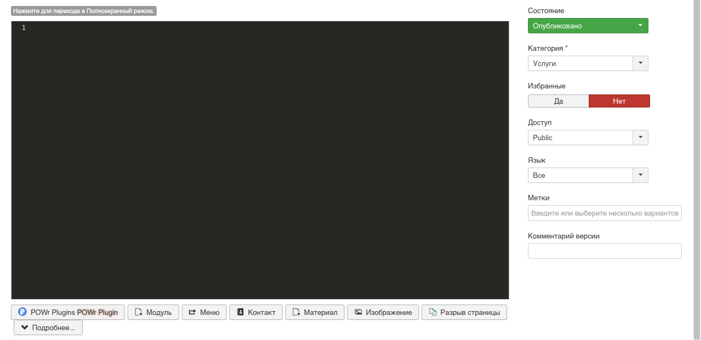
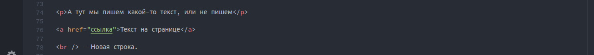
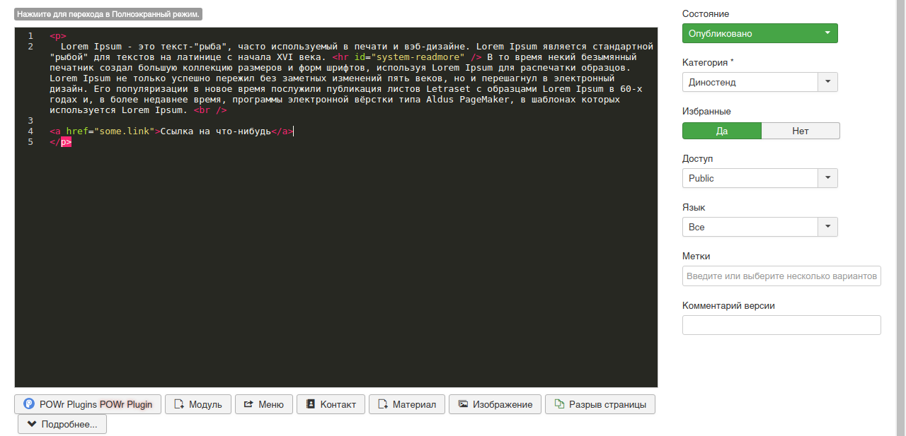

Возвращаемся на вкладку
Материал
 Вот тут нам и понадобится некоторое знание
HTML/CSS
Основное, что тебе понадобится, это тег
p
<p>Sample text here...</p>
Это параграф. Текст с описанием мы пишем в него. Из важных моментов - теги обязательно нужно закрывать, иначе что-то
может сломаться.
На данном этапе тебе не понадобится большое их кол-во, скорее всего будет достаточно следующих:
 Так же может понадобиться кнопка
Подробнее. Работает она предельно просто, всё, что после этого "тега" будет в тексте - будет отображаться
только тогда, когда человек полностью откроет статью. При большом кол-ве текста это удобно, иначе текст полностью
весь отобразится на главной, что нам не очень нужно.
В итоге данный раздел должен выглядеть приблизительно вот так:
 В этом фреймворке используется Bootstrap, потому, если ты захочешь чего-то еще, таблиц, форм или же прочего - ты
можешь просто зайти на страницу
https://getbootstrap.com/docs/3.3/css/#type. Тут примеры с кодом, который нужно вставить для того или же
иного действия. Документация вроде есть и на русском, если что, поищешь по запросу bootstrap. На сайте версия 3.3.7.